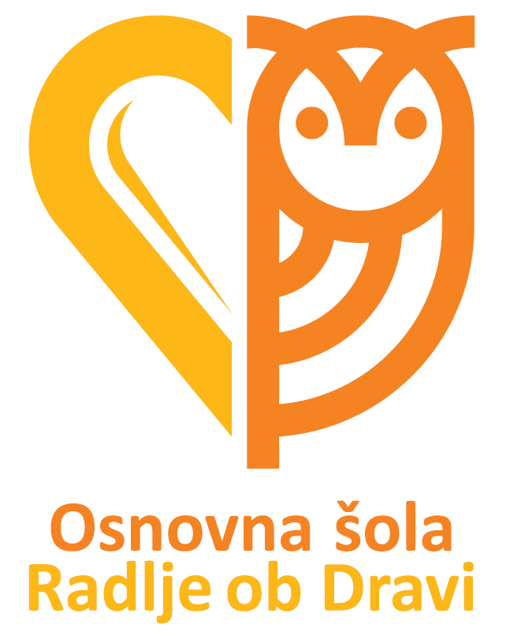

logotip šole:

povezava do OŠ Radlje:
OŠ Radlje
logotip šole:

povezava do OŠ Radlje: OŠ Radlje
Osnovna šola Radlje ob Dravi spada med srednje velike osnovne šole v Republiki Sloveniji. Skupaj s podružnicami in vrtcem jo obiskuje več kot 700 otrok iz občine Radlje ob Dravi in okoliških občin. Skupno šola zaposluje več kot 100 oseb.Osnovna šola Radlje ob Dravi je bila nazadnje dograjena in obnovlj 2005, v letu 2010 so tik ob šoli zgradena letaili še novo športno dvorano. Šola je dobro opremljena s sodobnimi učnimi pripomočki. V 95% učilnic je montiran digitalni projektor in v polovici teh še interaktivna tabla. Vsi učitelji in vzgojiteljice imajo za uspešno delo na voljo prenosne računalnike. Šola je v internet že več let povezana s hitro optično povezavo 100/100 in ima na vseh enotah brezžično omrežje. Poleg matične šole spadata k šoli še podružnici Remšnik in Vuhred ter vrtec pri Osnovni šoli Radlje ob Dravi skupaj z enoto Vuhred. Podružnica Remšnik se nahaja v slikovitem kraju Remšnik na skrajnem vzhodnem robu občine Radlje ob Dravi. Pouk od 1. do 9. razreda, ki poteka v štirih kombinacijah, obiskuje več kot 30 učencev. Podružnica Vuhred, ki jo obiskujejo učenci prve triade, se nahaja v kraju Vuhred, na južnem bregu reke Drave. V isti stavbi se nahaja enota Vrtca Radlje ob Dravi. Vrtec pri osnovni šoli Radlje ob Dravi je lociran v neposredni bližini Osnovne šole Radlje ob Dravi. Skupaj s podružnico Vuhred ga obiskuje več kot 200 otrok.
